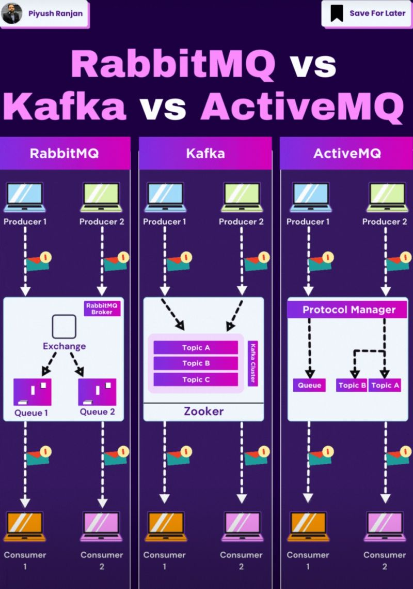
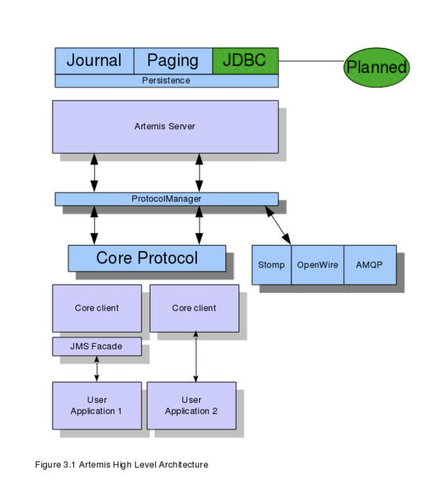

ActiveMQ is another message broker like 5.kafka it may-be used as pub/sub and message queue (see 4.Pub-sub vs message queue)
It can work over
and supports SSL for encryption.
Also it can scale from single to complex, multi-broker architectures Here is nice example of Kafka vs RabbitMQ vs ActiveMQ 
Here is more detailed architecture of ActiveMQ 
- Paging: In ActiveMQ, paging occurs when the broker stores messages on disk after exceeding its memory limit. This allows message producers to continue sending messages without running out of memory. Once memory usage drops, the broker retrieves and delivers the paged messages.
Paging helps manage large message volumes by preventing memory exhaustion, and it's configured by adjusting memory and disk usage limits like
memoryLimitandstoreUsage. - Journal - a high-performance, sequential log used to store message data before it's written to more permanent storage, like a database. The journal ensures data durability by recording all incoming messages and transactions, allowing recovery in case of a failure.
- Core client API. This is a simple intuitive Java API that allows the full set of messaging functionality without some of the complexities of JMS.
- JMS client API The standard JMS API is available at the client side.
- JDBC (Java Database Connectivity) is an API in Java that enables applications to interact with relational databases. It provides methods to execute SQL queries, update records, and retrieve data from databases like MySQL, PostgreSQL, and Oracle.
More detailed info you can find here https://activemq.apache.org/components/artemis/documentation/1.0.0/index.html